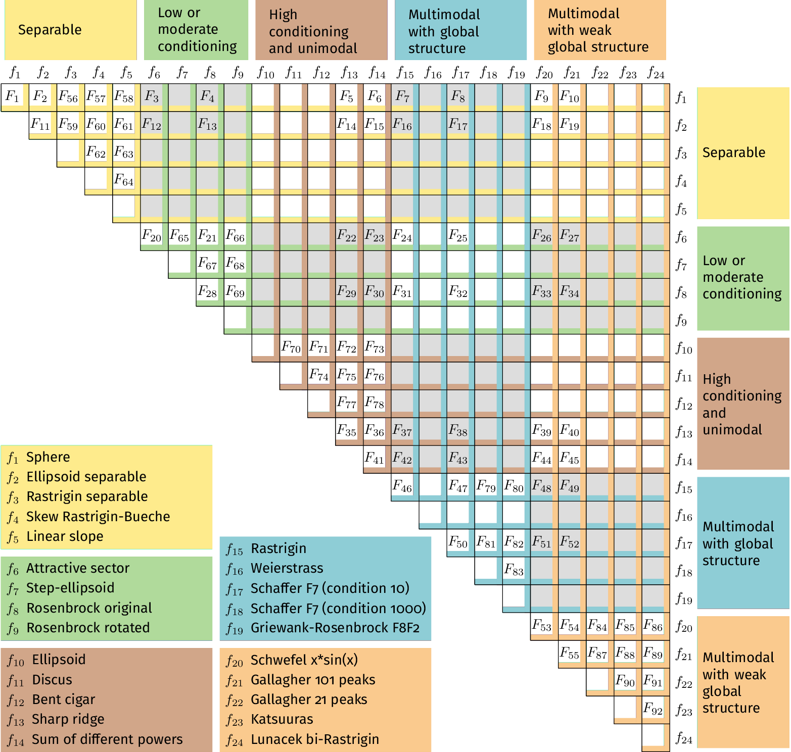

Function definitions
The bi-objective problems are created by combining two bbob functions (Finck et al. 2009).
Overview

F1: Sphere/Sphere
Combination of two sphere functions (f1 in the bbob suite).
Both objectives are unimodal, highly symmetric, rotational and scale invariant. The Pareto set is known to be a straight line and the Pareto front is convex. Furthermore, the normalized hypervolume value of the entire Pareto front with respect to the nadir point as reference point can be computed analytically as the integral 1-\int_{0}^{1} (1-\sqrt{x})^2dx = -\frac{1}{2}+\frac{4}{3}=0.833333\ldots.
Considered as the simplest bi-objective problem in continuous domain. Contained in the separable - separable function group.
F2: Sphere/Ellipsoid separable
Combination of the sphere function (f1 in the bbob suite) and the separable ellipsoid function (f2 in the bbob suite).
Both objectives are unimodal and separable. While the first objective is truly convex-quadratic with a condition number of 1, the second objective is only globally quadratic with smooth local irregularities and highly ill-conditioned with a condition number of about 10^6.
Contained in the separable - separable function group.
F3: Sphere/Attractive sector
Combination of the sphere function (f1 in the bbob suite) and the attractive sector function (f6 in the bbob suite).
Both objective functions are unimodal, but only the first objective is separable and truly convex quadratic. The attractive sector function is highly asymmetric, where only one hypercone (with angular base area) with a volume of roughly (1/2)^n yields low function values. The optimum of it is located at the tip of this cone.
Contained in the separable - moderate function group.
F4: Sphere/Rosenbrock original
Combination of the sphere function (f1 in the bbob suite) and the original, i.e., unrotated Rosenbrock function (f8 in the bbob suite).
The first objective is separable and truly convex, the second objective is partially separable (tri-band structure). The first objective is unimodal while the second objective has a local optimum with an attraction volume of about 25%.
Contained in the separable - moderate function group.
F5: Sphere/Sharp ridge
Combination of the sphere function (f1 in the bbob suite) and the sharp ridge function (f13 in the bbob suite).
Both objective functions are unimodal. In addition to the simple, separable, and differentiable first objective, a sharp, i.e., non-differentiable ridge has to be followed for optimizing the (non-separable) second objective. The gradient towards the ridge remains constant, when the ridge is approached from a given point. Approaching the ridge is initially effective, but becomes ineffective close to the ridge when the ridge needs to be followed in direction to its optimum. The necessary change in search behavior close to the ridge is difficult to diagnose, because the gradient towards the ridge does not flatten out.
Contained in the separable - ill-conditioned function group.
F6: Sphere/Sum of Different Powers
Combination of the sphere function (f1 in the bbob suite) and the sum of different powers function (f14 in the bbob suite).
Both objective functions are unimodal. The first objective is separable, the second non-separable. When approaching the second objective’s optimum, the difference in sensitivity between different directions in search space increases unboundedly.
Contained in the separable - ill-conditioned function group.
F7: Sphere/Rastrigin
Combination of the sphere function (f1 in the bbob suite) and the Rastrigin function (f15 in the bbob suite).
In addition to the simple sphere function, the prototypical highly multimodal Rastrigin function needs to be solved which has originally a very regular and symmetric structure for the placement of the optima. Here, however, transformations are performed to alleviate the original symmetry and regularity in the second objective.
The properties of the second objective contain non-separability, multimodality (roughly 10^n local optima), a conditioning of about 10, and a large global amplitude compared to the local amplitudes.
Contained in the separable - multimodal function group.
F8: Sphere/Schaffer F7, condition 10
Combination of the sphere function (f1 in the bbob suite) and the Schaffer F7 function with condition number 10 (f17 in the bbob suite).
In addition to the simple sphere function, an asymmetric, non-separable, and highly multimodal function needs to be solved to approach the Pareto front/Pareto set where the frequency and amplitude of the modulation in the second objective vary. The conditioning of the second objective and thus the entire bi-objective function is low.
Contained in the separable - multimodal function group.
F9: Sphere/Schwefel x*sin(x)
Combination of the sphere function (f1 in the bbob suite) and the Schwefel function (f20 in the bbob suite).
While the first objective function is separable and unimodal, the second objective function is partially separable and highly multimodal—having the most prominent 2^n minima located comparatively close to the corners of the unpenalized search area.
Contained in the separable - weakly-structured function group.
F10: Sphere/Gallagher 101 peaks
Combination of the sphere function (f1 in the bbob suite) and the Gallagher function with 101 peaks (f21 in the bbob suite).
While the first objective function is separable and unimodal, the second objective function is non-separable and consists of 101 optima with position and height being unrelated and randomly chosen (different for each instantiation of the function). The conditioning around the global optimum of the second objective function is about 30.
Contained in the separable - weakly-structured function group.
F11: Ellipsoid separable/Ellipsoid separable
Combination of two separable ellipsoid functions (f2 in the bbob suite).
Both objectives are unimodal, separable, only globally quadratic with smooth local irregularities, and highly ill-conditioned with a condition number of about 10^6.
Contained in the separable - separable function group.
F12: Ellipsoid separable/Attractive sector
Combination of the separable ellipsoid function (f2 in the bbob suite) and the attractive sector function (f6 in the bbob suite).
Both objective functions are unimodal but only the first one is separable. The first objective function, in addition, is globally quadratic with smooth local irregularities, and highly ill-conditioned with a condition number of about 10^6. The second objective function is highly asymmetric, where only one hypercone (with angular base area) with a volume of roughly (1/2)^n yields low function values. The optimum of it is located at the tip of this cone.
Contained in the separable - moderate function group.
F13: Ellipsoid separable/Rosenbrock original
Combination of the separable ellipsoid function (f2 in the bbob suite) and the original, i.e., unrotated Rosenbrock function (f8 in the bbob suite).
Only the first objective is separable and unimodal. The second objective is partially separable (tri-band structure) and has a local optimum with an attraction volume of about 25%. In addition, the first objective function shows smooth local irregularities from a globally convex quadratic function and is highly ill-conditioned with a condition number of about 10^6.
Contained in the separable - moderate function group.
F14: Ellipsoid separable/Sharp ridge
Combination of the separable ellipsoid function (f2 in the bbob suite) and the sharp ridge function (f13 in the bbob suite).
Both objective functions are unimodal but only the first one is separable.
The first objective is globally quadratic but with smooth local irregularities and highly ill-conditioned with a condition number of about 10^6. For optimizing the second objective, a sharp, i.e., non-differentiable ridge has to be followed.
Contained in the separable - ill-conditioned function group.
F15: Ellipsoid separable/Sum of Different Powers
Combination of the separable ellipsoid function (f2 in the bbob suite) and the sum of different powers function (f14 in the bbob suite).
Both objective functions are unimodal but only the first one is separable.
The first objective is globally quadratic but with smooth local irregularities and highly ill-conditioned with a condition number of about 10^6. When approaching the second objective’s optimum, the sensitivities of the variables in the rotated search space become more and more different.
Contained in the separable - ill-conditioned function group.
F16: Ellipsoid separable/Rastrigin
Combination of the separable ellipsoid function (f2 in the bbob suite) and the Rastrigin function (f15 in the bbob suite).
The objective functions show rather opposite properties. The first one is separable, the second not. The first one is unimodal, the second highly multimodal (roughly 10^n local optima). The first one is highly ill-conditioning (condition number of 10^6), the second one has a conditioning of about 10. Local non-linear transformations are performed in both objective functions to alleviate the original symmetry and regularity of the two baseline functions.
Contained in the separable - multimodal function group.
F17: Ellipsoid separable/Schaffer F7, condition 10
Combination of the separable ellipsoid function (f2 in the bbob suite) and the Schaffer F7 function with condition number 10 (f17 in the bbob suite).
Also here, both single objectives possess opposing properties. The first objective is unimodal, besides small local non-linearities symmetric, separable and highly ill-conditioned while the second objective is highly multimodal, asymmetric, and non-separable, with only a low conditioning.
Contained in the separable - multimodal function group.
F18: Ellipsoid separable/Schwefel x*sin(x)
Combination of the separable ellipsoid function (f2 in the bbob suite) and the Schwefel function (f20 in the bbob suite).
The first objective is unimodal, separable and highly ill-conditioned. The second objective is partially separable and highly multimodal—having the most prominent 2^n minima located comparatively close to the corners of the unpenalized search area.
Contained in the separable - weakly-structured function group.
F19: Ellipsoid separable/Gallagher 101 peaks
Combination of the separable ellipsoid function (f2 in the bbob suite) and the Gallagher function with 101 peaks (f21 in the bbob suite).
While the first objective function is separable, unimodal, and highly ill-conditioned (condition number of about 10^6), the second objective function is non-separable and consists of 101 optima with position and height being unrelated and randomly chosen (different for each instantiation of the function). The conditioning around the global optimum of the second objective function is about 30.
Contained in the separable - weakly-structured function group.
F20: Attractive sector/Attractive sector
Combination of two attractive sector functions (f6 in the bbob suite). Both functions are unimodal and highly asymmetric, where only one hypercone (with angular base area) per objective with a volume of roughly (1/2)^n yields low function values. The objective functions’ optima are located at the tips of those two cones.
Contained in the moderate - moderate function group.
F21: Attractive sector/Rosenbrock original
Combination of the attractive sector function (f6 in the bbob suite) and the Rosenbrock function (f8 in the bbob suite).
The first function is unimodal but highly asymmetric, where only one hypercone (with angular base area) with a volume of roughly (1/2)^n yields low function values (with the optimum at the tip of the cone). The second objective is partially separable (tri-band structure) and has a local optimum with an attraction volume of about 25%.
Contained in the moderate - moderate function group.
F22: Attractive sector/Sharp ridge
Combination of the attractive sector function (f6 in the bbob suite) and the sharp ridge function (f13 in the bbob suite).
Both objective functions are unimodal and non-separable. The first objective is highly asymmetric in the sense that only one hypercone (with angular base area) with a volume of roughly (1/2)^n yields low function values (with the optimum at the tip of the cone). For optimizing the second objective, a sharp, i.e., non-differentiable ridge has to be followed.
Contained in the moderate - ill-conditioned function group.
F23: Attractive sector/Sum of Different Powers
Combination of the attractive sector function (f6 in the bbob suite) and the sum of different powers function (f14 in the bbob suite).
Both objective functions are unimodal and non-separable. The first objective is highly asymmetric in the sense that only one hypercone (with angular base area) with a volume of roughly (1/2)^n yields low function values (with the optimum at the tip of the cone). When approaching the second objective’s optimum, the sensitivities of the variables in the rotated search space become more and more different.
Contained in the moderate - ill-conditioned function group.
F24: Attractive sector/Rastrigin
Combination of the attractive sector function (f6 in the bbob suite) and the Rastrigin function (f15 in the bbob suite).
Both objectives are non-separable, and the second one is highly multimodal (roughly 10^n local optima) while the first one is unimodal. Further properties are that the first objective is highly asymmetric and the second has a conditioning of about 10.
Contained in the moderate - multimodal function group.
F25: Attractive sector/Schaffer F7, condition 10
Combination of the attractive sector function (f6 in the bbob suite) and the Schaffer F7 function with condition number 10 (f17 in the bbob suite).
Both objectives are non-separable and asymmetric. While the first objective is unimodal, the second one is a highly multimodal function with a low conditioning where frequency and amplitude of the modulation vary.
Contained in the moderate - multimodal function group.
F26: Attractive sector/Schwefel x*sin(x)
Combination of the attractive sector function (f6 in the bbob suite) and the Schwefel function (f20 in the bbob suite).
The first objective is non-separable, unimodal, and asymmetric. The second objective is partially separable and highly multimodal—having the most prominent 2^n minima located comparatively close to the corners of the unpenalized search area.
Contained in the moderate - weakly-structured function group.
F27: Attractive sector/Gallagher 101 peaks
Combination of the attractive sector function (f6 in the bbob suite) and the Gallagher function with 101 peaks (f21 in the bbob suite).
Both objective functions are non-separable but only the first is unimodal. The first objective function is furthermore asymmetric. The second objective function has 101 optima with position and height being unrelated and randomly chosen (different for each instantiation of the function). The conditioning around the global optimum of the second objective function is about 30.
Contained in the moderate - weakly-structured function group.
F28: Rosenbrock original/Rosenbrock original
Combination of two Rosenbrock functions (f8 in the bbob suite).
Both objectives are partially separable (tri-band structure) and have a local optimum with an attraction volume of about 25%.
Contained in the moderate - moderate function group.
F29: Rosenbrock original/Sharp ridge
Combination of the Rosenbrock function (f8 in the bbob suite) and the sharp ridge function (f13 in the bbob suite).
The first objective function is partially separable (tri-band structure) and has a local optimum with an attraction volume of about 25%. The second objective is unimodal and non-separable and, for optimizing it, a sharp, i.e., non-differentiable ridge has to be followed.
Contained in the moderate - ill-conditioned function group.
F30: Rosenbrock original/Sum of Different Powers
Combination of the Rosenbrock function (f8 in the bbob suite) and the sum of different powers function (f14 in the bbob suite).
The first objective function is partially separable (tri-band structure) and has a local optimum with an attraction volume of about 25%. The second objective function is unimodal and non-separable. When approaching the second objective’s optimum, the sensitivities of the variables in the rotated search space become more and more different.
Contained in the moderate - ill-conditioned function group.
F31: Rosenbrock original/Rastrigin
Combination of the Rosenbrock function (f8 in the bbob suite) and the Rastrigin function (f15 in the bbob suite).
The first objective function is partially separable (tri-band structure) and has a local optimum with an attraction volume of about 25%. The second objective function is non-separable and highly multimodal (roughly 10^n local optima).
Contained in the moderate - multimodal function group.
F32: Rosenbrock original/Schaffer F7, condition 10
Combination of the Rosenbrock function (f8 in the bbob suite) and the Schaffer F7 function with condition number 10 (f17 in the bbob suite).
The first objective function is partially separable (tri-band structure) and has a local optimum with an attraction volume of about 25%. The second objective function is non-separable, asymmetric, and highly multimodal with a low conditioning where frequency and amplitude of the modulation vary.
Contained in the moderate - multimodal function group.
F33: Rosenbrock original/Schwefel x*sin(x)
Combination of the Rosenbrock function (f8 in the bbob suite) and the Schwefel function (f20 in the bbob suite).
Both objective functions are partially separable. While the first objective function has a local optimum with an attraction volume of about 25%, the second objective function is highly multimodal—having the most prominent 2^n minima located comparatively close to the corners of its unpenalized search area.
Contained in the moderate - weakly-structured function group.
F34: Rosenbrock original/Gallagher 101 peaks
Combination of the Rosenbrock function (f8 in the bbob suite) and the Gallagher function with 101 peaks (f21 in the bbob suite).
The first objective function is partially separable, the second one non-separable. While the first objective function has a local optimum with an attraction volume of about 25%, the second objective function has 101 optima with position and height being unrelated and randomly chosen (different for each instantiation of the function). The conditioning around the global optimum of the second objective function is about 30.
Contained in the moderate - weakly-structured function group.
F35: Sharp ridge/Sharp ridge
Combination of two sharp ridge functions (f13 in the bbob suite).
Both objective functions are unimodal and non-separable and, for optimizing them, two sharp, i.e., non-differentiable ridges have to be followed.
Contained in the ill-conditioned - ill-conditioned function group.
F36: Sharp ridge/Sum of Different Powers
Combination of the sharp ridge function (f13 in the bbob suite) and the sum of different powers function (f14 in the bbob suite).
Both functions are uni-modal and non-separable. For optimizing the first objective, a sharp, i.e., non-differentiable ridge has to be followed. When approaching the second objective’s optimum, the sensitivities of the variables in the rotated search space become more and more different.
Contained in the ill-conditioned - ill-conditioned function group.
F37: Sharp ridge/Rastrigin
Combination of the sharp ridge function (f13 in the bbob suite) and the Rastrigin function (f15 in the bbob suite).
Both functions are non-separable. While the first one is unimodal and non-differentiable at its ridge, the second objective function is highly multimodal (roughly 10^n local optima).
Contained in the ill-conditioned - multimodal function group.
F38: Sharp ridge/Schaffer F7, condition 10
Combination of the sharp ridge function (f13 in the bbob suite) and the Schaffer F7 function with condition number 10 (f17 in the bbob suite).
Both functions are non-separable. While the first one is unimodal and non-differentiable at its ridge, the second objective function is asymmetric and highly multimodal with a low conditioning where frequency and amplitude of the modulation vary.
Contained in the ill-conditioned - multimodal function group.
F39: Sharp ridge/Schwefel x*sin(x)
Combination of the sharp ridge function (f13 in the bbob suite) and the Schwefel function (f20 in the bbob suite).
While the first objective function is unimodal, non-separable, and non-differentiable at its ridge, the second objective function is highly multimodal—having the most prominent 2^n minima located comparatively close to the corners of its unpenalized search area.
Contained in the ill-conditioned - weakly-structured function group.
F40: Sharp ridge/Gallagher 101 peaks
Combination of the sharp ridge function (f13 in the bbob suite) and the Gallagher function with 101 peaks (f21 in the bbob suite).
Both objective functions are non-separable. While the first objective function is unimodal and non-differentiable at its ridge, the second objective function has 101 optima with position and height being unrelated and randomly chosen (different for each instantiation of the function). The conditioning around the global optimum of the second objective function is about 30.
Contained in the ill-conditioned - weakly-structured function group.
F41: Sum of Different Powers/Sum of Different Powers
Combination of two sum of different powers functions (f14 in the bbob suite).
Both functions are uni-modal and non-separable where the sensitivities of the variables in the rotated search space become more and more different when approaching the objectives’ optima.
Contained in the ill-conditioned - ill-conditioned function group.
F42: Sum of Different Powers/Rastrigin
Combination of the sum of different powers functions (f14 in the bbob suite) and the Rastrigin function (f15 in the bbob suite).
Both objective functions are non-separable. While the first one is unimodal, the second objective function is highly multimodal (roughly 10^n local optima).
Contained in the ill-conditioned - multimodal function group.
F43: Sum of Different Powers/Schaffer F7, condition 10
Combination of the sum of different powers functions (f14 in the bbob suite) and the Schaffer F7 function with condition number 10 (f17 in the bbob suite).
Both objective functions are non-separable. While the first one is unimodal with an increasing conditioning once the optimum is approached, the second objective function is asymmetric and highly multimodal with a low conditioning where frequency and amplitude of the modulation vary.
Contained in the ill-conditioned - multimodal function group.
F44: Sum of Different Powers/Schwefel x*sin(x)
Combination of the sum of different powers functions (f14 in the bbob suite) and the Schwefel function (f20 in the bbob suite).
Both objectives are non-separable. While the first objective function is unimodal, the second objective function is highly multimodal—having the most prominent 2^n minima located comparatively close to the corners of its unpenalized search area.
Contained in the ill-conditioned - weakly-structured function group.
F45: Sum of Different Powers/Gallagher 101 peaks
Combination of the sum of different powers functions (f14 in the bbob suite) and the Gallagher function with 101 peaks (f21 in the bbob suite).
Both objective functions are non-separable. While the first objective function is unimodal, the second objective function has 101 optima with position and height being unrelated and randomly chosen (different for each instantiation of the function). The conditioning around the global optimum of the second objective function is about 30.
Contained in the ill-conditioned - weakly-structured function group.
F46: Rastrigin/Rastrigin
Combination of two Rastrigin functions (f15 in the bbob suite).
Both objective functions are non-separable and highly multimodal (roughly 10^n local optima).
Contained in the multimodal - multimodal function group.
F47: Rastrigin/Schaffer F7, condition 10
Combination of the Rastrigin function (f15 in the bbob suite) and the Schaffer F7 function with condition number 10 (f17 in the bbob suite).
Both objective functions are non-separable and highly multimodal.
Contained in the multimodal - multimodal function group.
F48: Rastrigin/Schwefel x*sin(x)
Combination of the Rastrigin function (f15 in the bbob suite) and the Schwefel function (f20 in the bbob suite).
Both objective functions are non-separable and highly multimodal where the first has roughly 10^n local optima and the most prominent 2^n minima of the second objective function are located comparatively close to the corners of its unpenalized search area.
Contained in the multimodal - weakly-structured function group.
F49: Rastrigin/Gallagher 101 peaks
Combination of the Rastrigin function (f15 in the bbob suite) and the Gallagher function with 101 peaks (f21 in the bbob suite).
Both objective functions are non-separable and highly multimodal where the first has roughly 10^n local optima and the second has 101 optima with position and height being unrelated and randomly chosen (different for each instantiation of the function).
Contained in the multimodal - weakly-structured function group.
F50: Schaffer F7, condition 10/Schaffer F7, condition 10
Combination of two Schaffer F7 functions with condition number 10 (f17 in the bbob suite).
Both objective functions are non-separable and highly multimodal.
Contained in the multimodal - multimodal function group.
F51: Schaffer F7, condition 10/Schwefel x*sin(x)
Combination of the Schaffer F7 function with condition number 10 (f17 in the bbob suite) and the Schwefel function (f20 in the bbob suite).
Both objective functions are non-separable and highly multimodal. While frequency and amplitude of the modulation vary in an almost regular fashion in the first objective function, the second objective function possesses less global structure.
Contained in the multimodal - weakly-structured function group.
F52: Schaffer F7, condition 10/Gallagher 101 peaks
Combination of the Schaffer F7 function with condition number 10 (f17 in the bbob suite) and the Gallagher function with 101 peaks (f21 in the bbob suite).
Both objective functions are non-separable and highly multimodal. While frequency and amplitude of the modulation vary in an almost regular fashion in the first objective function, the second has 101 optima with position and height being unrelated and randomly chosen (different for each instantiation of the function).
Contained in the multimodal - weakly-structured function group.
F53: Schwefel xsin(x)/Schwefel xsin(x)
Combination of two Schwefel functions (f20 in the bbob suite).
Both objective functions are non-separable and highly multimodal where the most prominent 2^n minima of each objective function are located comparatively close to the corners of its unpenalized search area. Due to the combinatorial nature of the Schwefel function, it is likely in low dimensions that the Pareto set goes through the origin of the search space.
Contained in the weakly-structured - weakly-structured function group.
F54: Schwefel x*sin(x)/Gallagher 101 peaks
Combination of the Schwefel function (f20 in the bbob suite) and the Gallagher function with 101 peaks (f21 in the bbob suite).
Both objective functions are non-separable and highly multimodal. For the first objective function, the most prominent 2^n minima are located comparatively close to the corners of its unpenalized search area. For the second objective, position and height of all 101 optima are unrelated and randomly chosen (different for each instantiation of the function).
Contained in the weakly-structured - weakly-structured function group.
F55: Gallagher 101 peaks/Gallagher 101 peaks
Combination of two Gallagher functions with 101 peaks (f21 in the bbob suite).
Both objective functions are non-separable and highly multimodal. Position and height of all 101 optima in each objective function are unrelated and randomly chosen and thus, no global structure is present.
Contained in the weakly-structured - weakly-structured function group.
F56: Sphere/Rastrigin separable
Combination of the Sphere function (f1 in the bbob suite) and the separable Rastrigin function (f3 in the bbob suite).
While the first objective function is unimodal, highly symmetric, rotational and scale invariant, the second one is highly multimodal with a comparatively regular structure for the placement of the optima. Note that the non-linear transformations of the second objective’s Rastrigin function alleviate the symmetry and regularity of the original Rastrigin function.
Contained in the separable - separable function group.
F57: Sphere/Rastrigin-Büche
Combination of the Sphere function (f1 in the bbob suite) and the separable Büche-Rastrigin function (f4 in the bbob suite).
While the first objective function is unimodal, highly symmetric, rotational and scale invariant, the second one is highly multimodal with a structured but highly asymmetric placement of the optima. Constructed as a deceptive function for symmetrically distributed search operators, the second objective function has roughly 10D local optima, a conditioning of about 10, and a skew factor of about 10 in x-space and 100 in f-space.
Contained in the separable - separable function group.
F58: Sphere/Linear slope
Combination of the Sphere function (f1 in the bbob suite) and the Linear Slope function (f5 in the bbob suite).
Both objective functions are separable and amongst the simplest continuous functions to optimize. The first objective function is fully quadratic and symmetric around the optimum, the second objective function is fully linear within the hypercube [-5,5]^n and has a region of constant f-value outside the hypercube by definition to ensure that a solution at one corner of [-5,5]^n has optimal function value.
Contained in the separable - separable function group.
F59: Separable Ellipsoid/Separable Rastrigin
Combination of the separable Ellipsoid function (f2 in the bbob suite) and the separable Rastrigin function (f3 in the bbob suite).
Besides being both separable, the two objective functions are quite opposite: the first objective function is unimodal, globally quadratic and ill-conditioned with a conditioning of about 10^6 with smooth local irregularities while the second objective function is highly multimodal with roughly 10n local optima and only small conditioning of about 10. Note that the separable Rastrigin function has a comparatively regular structure for the placement of the optima but asymmetric and oscillating non-linear transformations of this function alleviates the symmetry and regularity of the original Rastrigin function.
Contained in the separable - separable function group.
F60: separable Ellipsoid/Büche-Rastrigin
Combination of the separable Ellipsoid function (f2 in the bbob suite) and the separable Büche-Rastrigin function (f4 in the bbob suite).
Besides being both separable, the two objective functions are quite opposite: the first objective function is unimodal, globally quadratic and ill-conditioned with a conditioning of about 10^6 with smooth local irregularities while the second objective is highly multimodal with a structured but highly asymmetric placement of the optima. Constructed as a deceptive function for symmetrically distributed search operators.
Contained in the separable - separable function group.
F61: Separable Ellipsoid/Linear Slope
Combination of the separable Ellipsoid function (f2 in the bbob suite) and the Linear Slope function (f5 in the bbob suite).
Both objective functions are separable. The first objective function is unimodal with a high condition number of about 10^6. The second objective function is fully linear within the hypercube [-5,5]^n and has a region of constant f-value outside the hypercube by definition to ensure that a solution at one corner of [-5,5]^n has optimal function value.
Contained in the separable - separable function group.
F62: separable Rastrigin/Büche-Rastrigin
Combination of the separable Rastrigin function (f3 in the bbob suite) and the separable Büche-Rastrigin function (f4 in the bbob suite).
Both objective functions are separable and highly multimodal with an underlying structure for the placements of the optima. While for the separable Rastrigin function, the placements of the optima is symmetric, the optima for the Büche-Rastrigin function are highly asymmetrically placed.
Contained in the separable - separable function group.
F63: Separable Rastrigin/Linear Slope
Combination of the separable Rastrigin function (f3 in the bbob suite) and the Linear Slope function (f5 in the bbob suite).
Both objective functions are separable, but while the first objective function is highly multimodal with an underlying symmetric structure, the second objective function is purely linear with plateaus of constant function value outside the region [-5,5]^n.
Contained in the separable - separable function group.
F64: Büche-Rastrigin/Linear slope
Combination of the Büche-Rastrigin function (f4 in the bbob suite) and the Linear Slope function (f5 in the bbob suite).
Both objective functions are separable, but while the first objective function is highly multimodal with an underlying asymmetric structure, the second objective function is purely linear with plateaus of constant function value outside the region [-5,5]^n.
Contained in the separable - separable function group.
F65: Attractive Sector/Step-ellipsoid
Combination of the Attractive Sector function (f6 in the bbob suite) and the Step Ellipsoidal function (f7 in the bbob suite).
Both objective functions are unimodal and of moderate conditioning. The first objective function is highly asymmetric, where only one hypercone (with angular base area) with a volume of roughly 1/2^n yields low function values. The optimum of the first objective is located at the tip of this cone. This function can be deceptive for cumulative step size adaptation. The second objective function consists of many plateaus of different sizes. Apart from a small area close to the global optimum, the gradient is zero almost everywhere.
Contained in the moderate - moderate function group.
F66: Attractive Sector/rotated Rosenbrock
Combination of the Attractive Sector function (f6 in the bbob suite) and the rotated Rosenbrock function (f9 in the bbob suite).
The first objective function is highly asymmetric, where only one hypercone (with angular base area) with a volume of roughly 1/2^n yields low function values. The optimum of the first objective is located at the tip of this cone. The second objective function is the so-called banana function due to its 2-D contour lines as a bent ridge (or valley) and partially separable (tri-band structure). In larger dimensions, the second objective function has a local optimum with an attraction volume of about 25%. Note that, compared to the original Rosenbrock function, a rotation in the search space is applied, such that the second objective function is non-separable.
Contained in the moderate - moderate function group.
F67: Step-ellipsoid/separable Rosenbrock
Combination of the Step Ellipsoidal function (f7 in the bbob suite) and the separable Rosenbrock function (f8 in the bbob suite).
The first objective function is unimodal, non-separable, and has a conditioning of about 100. It actually consists of many plateaus of different sizes. Apart from a small area close to the global optimum, the gradient is zero almost everywhere. The second objective function is the so-called banana function due to its 2-D contour lines as a bent ridge (or valley). It is partially separable (tri-band structure) and in larger dimensions, the function has a local optimum with an attraction volume of about 25%.
Contained in the moderate - moderate function group.
F68: Step-ellipsoid/rotated Rosenbrock
Combination of the Step Ellipsoidal function (f7 in the bbob suite) and the rotated Rosenbrock function (f9 in the bbob suite).
The first objective function is unimodal, non-separable, and has a conditioning of about 100. It actually consists of many plateaus of different sizes. Apart from a small area close to the global optimum, the gradient is zero almost everywhere. The second objective function is a rotated version of the original so-called banana function (due to its 2-D contour lines as a bent ridge or valley) and in larger dimensions, has a local optimum with an attraction volume of about 25%.
This function resembles F_{67} except for the additional search space rotation for the second objective function which makes both objective function fully non-separable.
Contained in the moderate - moderate function group.
F69: separable Rosenbrock/rotated Rosenbrock
Combination of the separable Rosenbrock function (f8 in the bbob suite) and the rotated Rosenbrock function (f9 in the bbob suite).
Both objective functions are Rosenbrock functions (also known under the name banana function due to its 2-D contour lines forming a bent ridge or valley) with a local optimum in large dimension that has about 25% attraction volume. The first objective function is partially separable while the second objective function is fully non-separable.
Contained in the moderate - moderate function group.
F70: Ellipsoid/Discus
Combination of the Ellipsoid function (f10 in the bbob suite) and the Discus (or Tablet) function (f11 in the bbob suite).
Both objective functions are globally quadratic (unimodal) ill-conditioned functions with condition numbers of 10^6 with smooth local irregularities. A single direction in search space is a thousand times more sensitive than all others for the Discus function.
Contained in the ill-conditioned - ill-conditioned function group.
F71: Ellipsoid/Bent Cigar
Combination of the Ellipsoid function (f10 in the bbob suite) and the Bent Cigar function (f12 in the bbob suite).
Both objective functions are unimodal, non-separable, and have a conditioning of about 10^6. The Ellipsoid function is globally quadratic with smooth local irregularities while the Bent Cigar function deviates remarkably from being quadratic due to an asymmetric transformation. To optimize the Bent Cigar function, a smooth, but very narrow ridge has to be followed.
Contained in the ill-conditioned - ill-conditioned function group.
F72: Ellipsoid/Sharp Ridge
Combination of the Ellipsoid function (f10 in the bbob suite) and the Sharp Ridge function (f13 in the bbob suite).
Both objective functions are unimodal, non-separable, and have a conditioning of about 10^6. Compared to the previous function, the ridge of the here is sharp (non-differentiable) and the gradient remains constant, when the ridge is approached from a given point. Approaching the ridge is initially effective, but search behavior becomes difficult to diagnose close to the ridge because the gradient towards the ridge does not flatten out.
Contained in the ill-conditioned - ill-conditioned function group.
F73: Ellipsoid/Sum of Different Powers
Combination of the Ellipsoid function (f10 in the bbob suite) and the Sum of Different Powers function (f14 in the bbob suite).
Both objective functions are unimodal and non-separable. While the Ellipsoid function has a constant conditioning of 10^6 everywhere, the sensitivities of the z_i-variables (in the rotated search space) for the Different Powers function become more and more different when approaching the optimum. The latter function has furthermore a small solution volume.
Contained in the ill-conditioned - ill-conditioned function group.
F74: Discus/Bent Cigar
Combination of the Discus function (f11 in the bbob suite) and the Bent cigar function (f12 in the bbob suite).
Both objective functions are unimodal, non-separable, and have a conditioning of about 10^6. The Discus function is globally quadratic with smooth local irregularities and has a single direction in search space that is a thousand times more sensitive than all others. The Bent Cigar function deviates remarkably from being quadratic due to an asymmetric transformation and a smooth, but very narrow ridge has to be followed to optimize it.
Contained in the ill-conditioned - ill-conditioned function group.
F75: Discus/Sharp Ridge
Combination of the Discus function (f11 in the bbob suite) and the Sharp Ridge function (f13 in the bbob suite).
Both objective functions are unimodal, non-separable, and have a conditioning of about 10^6. The Discus function is globally quadratic with smooth local irregularities and has a single direction in search space that is a thousand times more sensitive than all others. To optimize the Sharp Ridge function, a sharp (i.e. non-differentiable) ridge has to be followed around which the gradient remains constant, when the ridge is approached from a given point. Approaching the ridge is initially effective, but search behavior becomes difficult to diagnose close to the ridge because the gradient towards the ridge does not flatten out.
Contained in the ill-conditioned - ill-conditioned function group.
F76: Discus/Sum of Different Powers
Combination of the Discus function (f11 in the bbob suite) and the Sum of Different Powers function (f14 in the bbob suite).
Both objective functions are unimodal and non-separable. While the globally quadratic Discus function has a constant conditioning of about 10^6 everywhere with a single direction in search space that is a thousand times more sensitive than all others, the sensitivities of the z_i-variables (in the rotated search space) for the Different Powers function become more and more different when approaching the optimum. The latter function has furthermore a small solution volume.
Contained in the ill-conditioned - ill-conditioned function group.
F77: Bent Cigar/Sharp Ridge
Combination of the Bent Cigar function (f12 in the bbob suite) and the Sharp Ridge function (f13 in the bbob suite).
Both objective functions are unimodal, non-separable, and have a conditioning of about 10^6. The Bent Cigar function deviates remarkably from being quadratic due to an asymmetric transformation and a smooth, but very narrow ridge has to be followed to optimize it. To optimize the Sharp Ridge function, in turn, the ridge to be followed is even sharper (i.e. non-differentiable), around which the gradient remains constant, when the ridge is approached from a given point. Approaching the ridge is initially effective, but search behavior becomes difficult to diagnose close to the ridge because the gradient towards the ridge does not flatten out.
Contained in the ill-conditioned - ill-conditioned function group.
F78: Bent Cigar/Sum of Different Powers
Combination of the Bent Cigar function (f12 in the bbob suite) and the Sum of Different Powers function (f14 in the bbob suite).
Both objective functions are unimodal, non-separable, and have a conditioning of about 10^6.
Both objective functions are unimodal and non-separable but differ in the difficulties provided to an optimization algorithm. The Bent Cigar function, on the one hand, deviates remarkably from being quadratic due to an asymmetric transformation and a smooth, but very narrow ridge has to be followed to optimize it. The sensitivities of the z_i-variables (in the rotated search space) for the Different Powers function, on the other hand, become more and more different when approaching the optimum.
Contained in the ill-conditioned - ill-conditioned function group.
F79: Rastrigin/Schaffer F7 with conditioning of 1000
Combination of the Rastrigin function (f15 in the bbob suite) and the Schaffer F7 function with conditioning 1000 (f18 in the bbob suite).
Both objective functions are non-separable and highly multimodal. The problem’s Rastrigin function alleviates the symmetry and regularity of the originally proposed Rastrigin function via asymmetric and oscillating transformations of the search space. It has roughly 10^n local optima, a low conditioning, and the global amplitude of function values is large compared to the local amplitudes. On the contrary, frequency and amplitude of the function value modulation vary for the Schaffer F7 function. It is furthermore asymmetric as well but, compared to the other objective function is moderately ill-conditioned with a conditioning of 1000.
Contained in the multimodal - multimodal function group.
F80: Rastrigin/Griewank-Rosenbrock
Combination of the Rastrigin function (f15 in the bbob suite) and the Griewank-Rosenbrock function (f19 in the bbob suite).
Both objective functions are non-separable and highly multimodal. Both objective functions furthermore are variants of the original Rosenbrock function: The problem’s Rastrigin function alleviates the symmetry and regularity of the originally proposed Rastrigin function via asymmetric and oscillating transformations of the search space. The Griewank-Rosenbrock function resembles the original Rosenbrock function in a highly multimodal way.
Contained in the multimodal multimodal function group.
F81: Schaffer F7/Schaffer F7 with conditioning 1000
Combination of the Schaffer F7 function (f17 in the bbob suite) and the Schaffer F7 with conditioning 1000 function (f18 in the bbob suite).
Both objective functions are of the same type (asymmetric, non-separable, highly multimodal where frequency and amplitude of the modulation vary). The main difference is in the conditioning, which is about 10 in one case and 1000 in the other.
Contained in the multimodal - multimodal function group.
F82: Schaffer F7/Griewank-Rosenbrock
Combination of the Schaffer F7 function (f17 in the bbob suite) and the Griewank-Rosenbrock function (f19 in the bbob suite).
Both objective functions are non-separable and highly multimodal. For the asymmetric Schaffer F7 function, frequency and amplitude of the function value modulation vary and it has a low conditioning of about 10. The Griewank-Rosenbrock function resembles the original Rosenbrock function in a highly multimodal way.
Contained in the multimodal - multimodal function group.
F83: Schaffer F7 with conditioning 1000/Griewank-Rosenbrock
Combination of the Schaffer F7 function with conditioning 1000 (f18 in the bbob suite) and the Griewank-Rosenbrock function (f19 in the bbob suite).
Compared to F_{82}, the only difference is the higher condition number of about 1000 (compared to 10) in the Schaffer F7 function.
Contained in the multimodal - multimodal function group.
F84: Schwefel/Gallagher 21
Combination of the Schwefel function (f20 in the bbob suite) and the Gallagher 21 function (f22 in the bbob suite).
Both objective functions are multimodal with only a weak global structure. The most prominent 2^n minima of the Schwefel function are located comparatively close to the corners of the unpenalized search area. The penalization is essential, as otherwise more and better minima occur further away from the search space origin. The function is furthermore partially separable, a kind of combinatorial problem, and has two search regimes. The Gallagher function consists of 21 optima with position and height being unrelated and randomly chosen (different for each instantiation of the function). The conditioning of the Gallagher function around the global optimum is about 1000.
Contained in the weakly-structured - weakly-structured function group.
F85: Schwefel/Katsuuras
Combination of the Schwefel function (f20 in the bbob suite) and the Katsuuras function (f23 in the bbob suite).
Both objective functions are highly multimodal with an exponential number (in the dimension) of (global) optima and only a weak global structure. The most prominent 2^n minima of the Schwefel function are located comparatively close to the corners of the unpenalized search area. The Katsuuras function, in turn, is highly repetitive with more than 10^n global optima.
F86: Schwefel/Lunacek bi-Rastrigin
Combination of the Schwefel function (f20 in the bbob suite) and the Lunacek bi-Rastrigin function (f24 in the bbob suite).
Both objective functions are highly multimodal with only a weak global structure. While the most prominent 2^n minima of the Schwefel function are located comparatively close to the corners of the unpenalized search area, the Lunacek bi-Rastrigin function has two superimposed funnels. Presumably, different approaches need to be used for ‘selecting the funnel’ and for searching the highly multimodal function ‘within’ the funnel. The single-objective Lunacek bi-Rastrigin function was constructed to be deceptive for some evolutionary algorithms with large population size.
Contained in the weakly-structure - weakly-structured function group.
F87: Gallagher 101/Gallagher 21
Combination of Gallagher’s Gaussian 101-me Peaks function (f21 in the bbob suite) and the Gallagher’s Gaussian 21-hi Peaks function (f22 in the bbob suite).
Both objective functions are multimodal and non-separable. Both consist of a set of optima with position and height being unrelated and randomly chosen. The number of optima is 101 and 21 respectively and the condition number around the (unique) global optima are about 30 and about 1000 respectively.
Contained in the weakly-structured - weakly-structured function group.
F88: Gallagher 101/Katsuuras
Combination of Gallagher’s Gaussian 101-me Peaks function (f21 in the bbob suite) and the Katsuuras function (f23 in the bbob suite).
Both objective functions are non-separable and highly multimodal with only a weak global structure. Gallagher’s Gaussian 101-me Peaks function consists of a set of 101 optima with position and height being unrelated and randomly chosen. The conditioning is about 30. The Katsuuras function, in turn, is highly repetitive with more than 10^n global optima.
Contained in the weakly-structured - weakly-structured function group.
F89: Gallagher 101/Lunacek bi-Rastrigin
Combination of Gallagher’s Gaussian 101-me Peaks function (f21 in the bbob suite) and the Lunacek bi-Rastrigin function (f24 in the bbob suite).
Both objective functions are non-separable and highly multimodal with only a weak global structure. Gallagher’s Gaussian 101-me Peaks function consists of a set of 101 optima with position and height being unrelated and randomly chosen. The conditioning is about 30. The Lunacek bi-Rastrigin function has two superimposed funnels. Presumably, different approaches need to be used for ‘selecting the funnel’ and for searching the highly multimodal function ‘within’ the funnel. The single-objective Lunacek bi-Rastrigin function was constructed to be deceptive for some evolutionary algorithms with large population size.
Contained in the weakly-structured - weakly-structured function group.
F90: Gallagher 21/Katsuuras
Combination of Gallagher’s Gaussian 21-hi Peaks function (f22 in the bbob suite) and the Katsuuras function (f23 in the bbob suite).
Both objective functions are non-separable and multimodal with only a weak global structure. Gallagher’s Gaussian 21-hi Peaks function consists of a set of 21 optima with position and height being unrelated and randomly chosen. The conditioning is about 1000. The Katsuuras function, in turn, is highly repetitive with more than 10^n global optima.
Contained in the weakly-structured - weakly-structured function group.
F91: Gallagher 21/Lunacek bi-Rastrigin
Combination of Gallagher’s Gaussian 21-hi Peaks function (f22 in the bbob suite) and the Lunacek bi-Rastrigin function (f24 in the bbob suite).
Both objective functions are non-separable and multimodal with only a weak global structure. Gallagher’s Gaussian 21-hi Peaks function consists of a set of 21 optima with position and height being unrelated and randomly chosen. The conditioning is about 1000. The Lunacek bi-Rastrigin function has two superimposed funnels. Presumably, different approaches need to be used for ‘selecting the funnel’ and for searching the highly multimodal function ‘within’ the funnel. The single-objective Lunacek bi-Rastrigin function was constructed to be deceptive for some evolutionary algorithms with large population size.
Contained in the weakly-structured - weakly-structured function group.
F92: Katsuuras/Lunacek bi-Rastrigin
Combination of the Katsuuras function (f23 in the bbob suite) and the Lunacek bi-Rastrigin function (f24 in the bbob suite).
Both objective functions are non-separable and highly multimodal with only a weak global structure. The Katsuuras function is highly repetitive with more than 10^n global optima. The Lunacek bi-Rastrigin function has two superimposed funnels. Presumably, different approaches need to be used for ‘selecting the funnel’ and for searching the highly multimodal function ‘within’ the funnel. The single-objective Lunacek bi-Rastrigin function was constructed to be deceptive for some evolutionary algorithms with large population size.
Contained in the weakly-structured - weakly-structured function group.